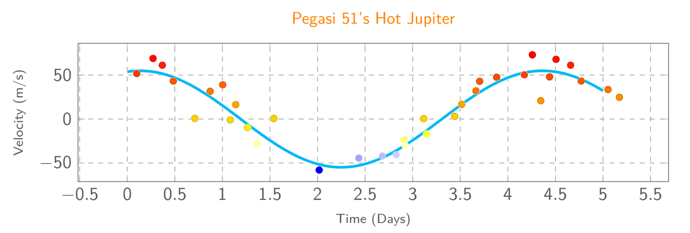

Non-Uniform Observations and Lomb-Scargle
Jed Rembold
February 22, 2024
Announcements
- Be working on HW3!
- Don’t forget the check-in form this weekend!
- Quiz scores are finished, I just need to get them in the gradebook
- Fingers crossed we get our network back soon…
Recap
- Looking at discrete Fourier transforms brings extra effects:
- The overall observing window controls the broadness of the found peaks
- The sampling rate determines how often we get aliased peaks
- It is worth noting that, for a general Discrete Fourier Transform
power spectrum, the max frequency reported is before the aliasing would
start
- When using pure Fourier Transform approaches, you won’t need to worry about aliases
Discussing Today
- What happens when observations are not consistantly spaced?
- The Lomb-Scargle Periodogram
- Period-Folding
- Exoplanet Hunting:
- Astrometric Method
- Doppler Method
Lomb-Scargle
- Lomb and Scargle considered a more generalized form of the
periodogram, with added functions \(A\), \(B\), and \(\tau\), and then showed that you could
choose those functions such that:
- The periodogram reduces to the classical form for evenly spaced observations
- The periodogram’s statistics are analytically computable
- The periodogram is insensitive to global time-shifts in the data
- The same basic insights we had with the classic periodogram will still hold qualitatively with Lomb-Scargle, even if not exactly the same quantitatively
- The real price you pay vs the classic periodogram is that you have to deal with aliases
Lomb-Scargle in Python
- Scipy’s Signals library provides an implementation of the
Lomb-Scargle periodogram
from scipy.signal import lombscargle
- Works with angular frequencies: \[\text{Angular frequency } = \omega = \frac{2\pi}{T} = 2\pi f \]
- You need to provide 3 arrays:
- The sequences of observation times
- The observed signal
- The desired angular frequencies to compute the periodogram over
power = lombscargle(ts, signal, afreqs, precenter=True)Lomb-Scargle in R
- Install the “lomb” library to get access to nice Lomb-Scargle
functions in R
install.packages("lomb")
- Works with normal frequencies!
- You can actually have it work directly in terms of period as well if you like
- Need to provide:
- Observation times
- Observed signals
- Starting and stopping frequency/period values
model <- lsp(df, from=0.001, to=1)Demo
- The file here is of a simple sine wave with noise added.
- It has been sampled randomly to create a non-uniform sample rate.
- Our goal is to use Lomb-Scargle to extract the period.
Activity!
- Provided here is a noisy signal that is a combination of several signals with differing periods
- Determine the period of all underlying signals
- How did you parse the different aliases?
Phase Folding
Periodograms are excellent for determining the frequency / period of hidden signals, but they don’t let you see those signals
Often times want to go one step further and use the found period to “fold” the signal over again on itself
- Snippets of the signal that may have been captured by very different observations get properly aligned or stacked
The phase of the signal describes how far is signal is through its period
Calculating phase is a classic example of using the modulo operator:
phase = times % period normalize_phase = phase / period
Visual Phase Folding
- Often times you’ll see the phase scaled by the period, so that it starts at 0 and ends at 1
- Be careful! Folding at integer multiples of the true period may look clean, but will contain more than a single oscillation
- Notebook Demonstration (requires the ipywidgets package)

Why are planets so hard to see?
- Exoplanets are planets orbiting stars that are not our own Sun
- Commonly far too tiny to be observed directly
- Recall we can’t even resolve most stars
- We must then rely on other, more subtle measures

Gravity Tugs!
- Planets and their host stars actually orbit the center of mass between the planet and its star
- In most system, this point might still be inside the radius of the star, but it is not at the center of the star
- As the star oscillates then, you get a bit of “wobble”
- Most pronounced for massive planets far from their host star
The Astrometric Method
- Make extremely precise measurements of a star’s location against its background stars
- Need slightly ridiculous levels of precision to do well
- More “obvious” planets would have longer orbits, and thus we would need to observe longer to see their effects
- These types of measurements are one of the main aims of the GAIA
mission
- Hangs out at the \(L_2\) Lagrange point (same as Webb!)
- Needs to know its exact position to within 150 m every day!
Wiggle Wiggle
- Often, we are not viewing the plane of an exoplanetary system directly from the top
- How we see this “wiggle” from Earth depends on how the planets orbit
is oriented relative to us
- A perfectly “top down” view would have us seeing the planet making little circles
- A perfectly “side” view would have us seeing the planet move towards us and away from us on the left and right sides
- In general, it is easier for us to detect and measure the forwards and backwards motion, but instruments like Gaia can detect the tinier circular motion for some systems
Doppler Wiggle
- The idea then is to monitor the dominant frequency of light emitted over a period of time
- Should result in a sinusoidal curve as the star wiggles
- The amount of wiggle will depend on both the mass of the orbiting planet and our perspective
